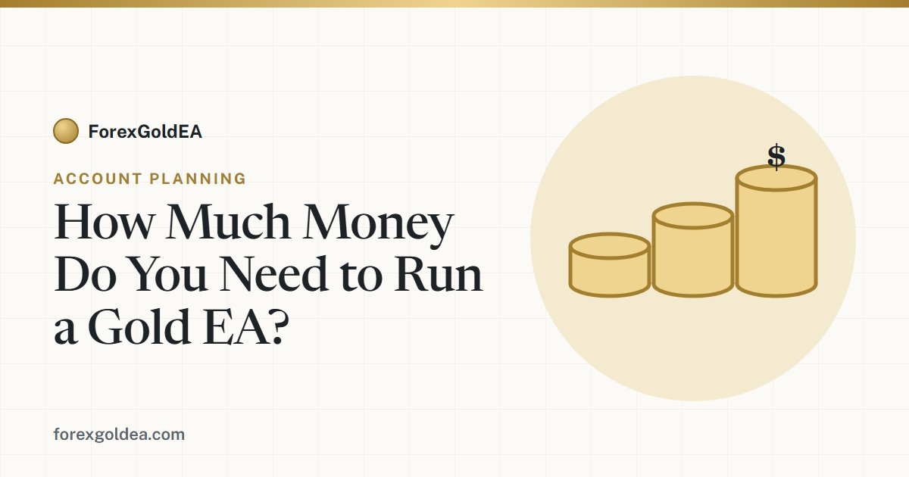

How Much Money Do You Need to Run a Gold EA?

"What's the minimum deposit?" is the first question almost everyone asks about running a XAU/USD expert advisor. The honest answer isn't a single number — it depends on lot sizing, your stop-loss distance, and how much drawdown room the strategy needs to survive a normal losing streak. This guide walks through the real math for a $100, $500 and $1,000 account.
Start with risk, not with the deposit
Most beginners pick a deposit first and a lot size second. Professionals do it the other way round: they decide how many dollars they are willing to lose on a single trade, and let that number dictate everything else. A widely used rule is risking 1–2% of the account per trade. On a $500 account, that means $5–$10 per trade — no more.
Why so little? Because losing streaks are normal, not exceptional. Even a strategy that wins more often than it loses will hit four or five losers in a row eventually. At 2% risk, five straight losses cost you about 10% of the account — uncomfortable, but survivable. At 10% risk per trade, the same streak destroys half the account and usually the trader's discipline with it.
What a 0.01 lot on gold actually means
On most brokers, one standard lot of XAU/USD is 100 ounces, so the minimum size of 0.01 lots equals 1 ounce of gold. That gives you a simple rule of thumb:
Rule of thumb: at 0.01 lots, every $1 move in the gold price changes your P/L by about $1. If your EA uses a $6 stop-loss distance, a losing trade at 0.01 lots costs roughly $6 (plus spread).
Gold routinely moves $10–$30 in a day, which is exactly why sensible gold EAs use fixed stop-losses. To hold a 0.01-lot position you also need margin — at 1:500 leverage this is only a few dollars per position, so on small accounts margin is rarely the real constraint. Drawdown room is.
$100 vs $500 vs $1,000: the honest comparison
| Account size | Sensible risk per trade (1–2%) | Typical lot size | What it feels like in practice |
|---|---|---|---|
| $100 | $1–$2 | 0.01 (minimum) | Possible, but tight. Even at minimum size, one trade often risks 5%+ of the account. A normal losing streak can take the account near stop-out before the strategy recovers. Better treated as a live test than an income attempt. |
| $500 | $5–$10 | 0.01–0.03 | The realistic starting point for most people. Risk per trade stays inside the 1–2% rule at real lot sizes, and there is enough buffer to sit through ordinary drawdown without panic. |
| $1,000 | $10–$20 | 0.02–0.05 | Comfortable. The EA can size positions properly, survive losing streaks with room to spare, and compound results meaningfully if the strategy performs. |
Notice what the table is really saying: the difference between account sizes is not "how much you can make" — it is how much punishment the account can absorb while staying inside sensible risk rules. That absorption capacity is what keeps an EA alive long enough for its edge, if it has one, to show up.
The drawdown buffer most people forget
An EA account has three jobs for its balance: covering margin, absorbing open-trade fluctuation, and surviving drawdown. The first two are small. The third is what kills undersized accounts. As a rule, after margin you want at least 20–30% of the balance free as a drawdown buffer — money whose only job is to let the account breathe through a losing period.
- Set a daily loss limit. A cap that pauses trading after a bad day protects the buffer from one ugly session.
- Set a maximum drawdown ceiling. A circuit breaker (for example 15–20% of balance) that stops the EA entirely is the difference between a bad month and a blown account.
- Withdraw or scale deliberately. If the account grows, either take profits out or increase size according to the same 1–2% rule — not both at once.
The cent-account shortcut
If you want to test a gold EA with real execution but minimal money, many brokers offer cent accounts, where balances and lots are denominated in cents. A $50 deposit behaves like a $5,000 cent balance, letting the EA trade with live spreads and slippage while a full losing streak costs you the price of a pizza. It is one of the most honest ways to evaluate any EA before committing a real balance — more honest than a backtest, cheaper than a live $1,000 account.
So what's the actual minimum?
Our honest answer for a gold EA that uses fixed stops and minimum 0.01 lots: $100 is the technical minimum, $300–$500 is the practical minimum, and $1,000 is comfortable. Below $300, you are not really testing the strategy — you are testing your luck against the stop-out level. And whatever the balance: trade only with money you can genuinely afford to lose. No EA, including ours, removes the risk of loss.
Ready to try it with sensible risk settings?
Get ForexGoldEA free with our partner broker, then follow the setup guide to configure risk per trade, a daily loss limit and a drawdown ceiling.
Get the EA Talk to us on Telegram →Frequently asked questions
Can I run a gold EA with $100?
Technically yes, if your broker offers 0.01 lots on XAUUSD — but the margin for error is very small, and a normal losing streak can hit a stop-out. A cent account or a $300–$500 balance gives the same strategy far more room to work.
What lot size should I use for XAUUSD on a small account?
Start from your risk, not the lot size: decide the dollars you're willing to lose per trade (1–2% of balance), divide by the stop-loss distance in dollars per 0.01 lot, and round down. On most small accounts that means 0.01–0.03 lots.
Why does an EA need a drawdown buffer?
Every strategy has losing streaks. If the balance only covers margin plus a couple of losses, a normal streak can stop the account out before the strategy recovers. Keep at least 20–30% of the balance free above margin.
Is a cent account good for testing a gold EA?
Yes — real execution and real spreads at a fraction of the risk. It's one of the most honest ways to evaluate an EA before scaling up.
Risk disclosure: Trading foreign exchange and CFDs on margin, including gold (XAU/USD), carries a high level of risk and may not be suitable for every investor. You can lose some or all of your capital. Figures in this article are illustrative examples, not projections, and past or backtested performance does not guarantee future results. ForexGoldEA is a trading tool, not financial advice.